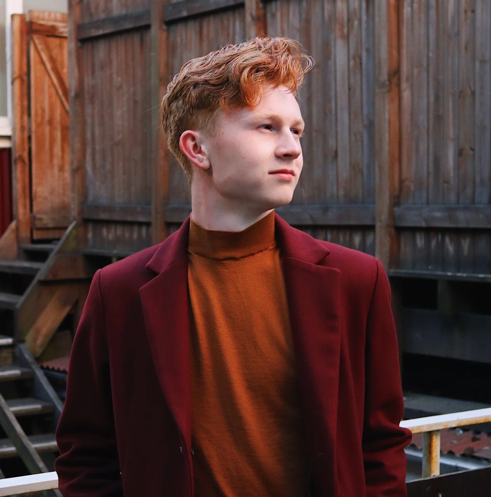

Statistics · Civic Tech · Urban Studies
BlakeRobertMills
Hi, I'm Blake
I'm a data scientist working in government innovation, public interest technology, and civic tech.
I build colour palettes for the R community, make maps and charts about the places people live, and write about what the numbers turn up. Formally trained in statistics; self-taught in design and mixology.

Packages,
plots & places
Let's talk
Open to speaking engagements and job opportunities. I also tutor in data visualization, R, and machine learning.